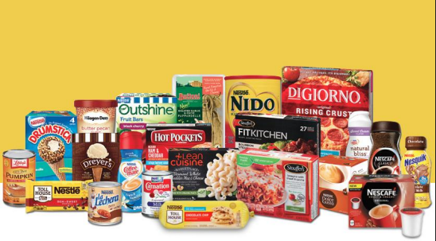

This project delves into the unique realm of evaluating Nestlé's product performance. Within the global food giant's diverse portfolio lies a focus on nutrition, impacting lives worldwide. It serves as a guide to strategic decisions for expansion and innovation across five continents. Welcome to a journey of global impact.

In this project, I analyzed a dataset containing employee information from a mid-sized company. The dataset includes 780 rows and 10 columns, each detailing various attributes of the employees. Through this analysis, I aimed to uncover key patterns and insights that can inform business decisions, especially in HR and management.

This project delves into the heart of donor insights and donation rates, offering invaluable perspectives on donor behaviors, preferences, and contributions. Welcome to a voyage of data-driven philanthropy, where every insight paves the way for a brighter, more inclusive future for Education for All.

This project aim to harness the power of data analytics and connectivity, revolutionizing the way airline operations are managed. Join me as we embark on a quest to streamline processes, empower decision-making, and propel the airline industry into a new era of efficiency and innovation. Welcome aboard this journey of transformation and discovery, where data becomes the wind beneath our wings
.png)
Customer Lifetime Value (CLV) is a crucial metric for understanding a company's potential revenue from its customers. By forecasting the net profit expected from the entire future relationship with a customer, businesses can make strategic decisions regarding marketing, customer acquisition, and retention. In my analysis, I used SQL for data cleaning and Power BI for visualizing CLV, offering valuable insights into customer behavior and profitability.